HYDRAULIC BRAKE BOOSTER > DISASSEMBLY |
| 1. REMOVE NO. 1 BRAKE ACTUATOR BRACKET |
| 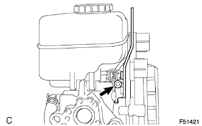 |
Using a 5 mm hexagon wrench, remove the bolt and No. 1 brake actuator bracket.
| 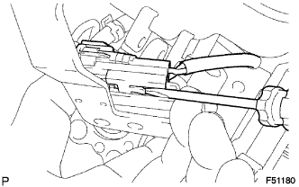 |
Using a screwdriver, disconnect the brake fluid level warning switch connector from the No. 1 brake actuator bracket.
| 2. REMOVE BRAKE MASTER CYLINDER RESERVOIR SUB-ASSEMBLY |
| 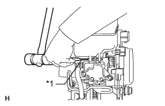 |
Using a pin punch and hammer, remove the pin from the brake master cylinder reservoir.
| *1 | Pin Punch |
| 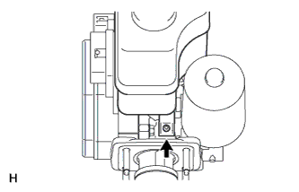 |
Remove the screw and pull out the brake master cylinder reservoir sub-assembly.
Remove the master cylinder reservoir filler cap.
| 3. REMOVE MASTER CYLINDER RESERVOIR GROMMET |
| 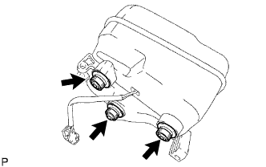 |
Remove the 3 reservoir grommets from the master cylinder reservoir.
| 4. REMOVE NO. 1 BRAKE ACTUATOR HOSE |
| 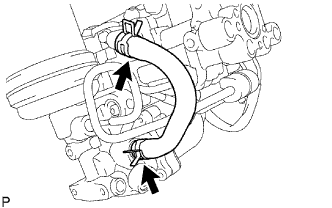 |
Using needle nose pliers, slide the 2 clips and remove the brake actuator hose and 2 clips.
| 5. REMOVE NO. 1 BRAKE ACTUATOR TUBE |
 |
Using a union nut wrench, remove the No. 1 brake actuator tube.
| 6. REMOVE BRAKE BOOSTER WITH ACCUMULATOR PUMP ASSEMBLY |
| 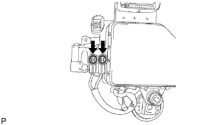 |
Using a screwdriver, remove the 2 plugs.
| 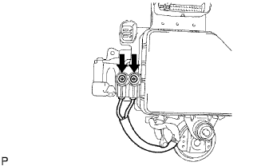 |
Remove the 2 screws and disconnect the wire harnesses from the master cylinder solenoid.
| 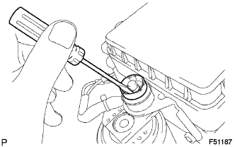 |
Using a screwdriver, remove the clip.
| 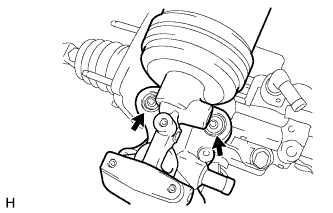 |
Remove the brake booster with accumulator pump assembly from the brake master cylinder.
Remove the 2 brake booster pump collars and 2 brake booster pump bushes from the brake booster with accumulator pump assembly.
| 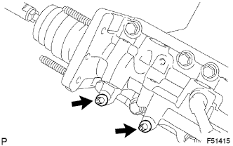 |
Using a 4 mm hexagon wrench, remove the 2 pins.
| 7. REMOVE NO. 1 BRAKE BOOSTER PUMP BRACKET |
| 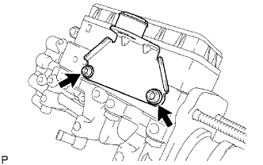 |
Using a 5 mm hexagon wrench, remove the 2 bolts and No. 1 brake booster pump bracket from the brake master cylinder solenoid.
Remove the brake booster pump bush from the No. 1 brake booster pump bracket.
| 8. REMOVE NO. 3 BRAKE ACTUATOR BRACKET |
| 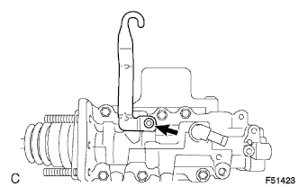 |
Remove the bolt and No. 3 brake actuator bracket from the brake master cylinder.
| 9. REMOVE BRAKE BOOSTER ACCUMULATOR PIPE |
| 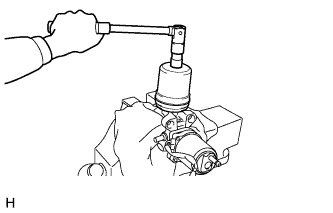 |
Secure the brake booster with accumulator pump assembly in a vise.
Remove the brake booster accumulator.
Remove the O-ring from the brake booster accumulator.
Remove the brake booster accumulator pipe and compression spring.
| 10. REMOVE MASTER CYLINDER SOLENOID |
| 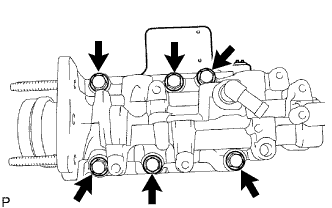 |
Remove the 6 bolts and master cylinder solenoid.
| 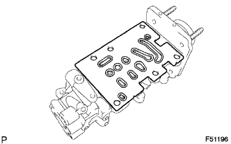 |
Remove the gasket.
| 11. REMOVE MASTER CYLINDER PUSH ROD CLEVIS |
| 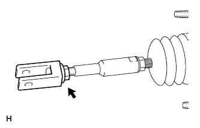 |
Loosen the lock nut on the rod operating adapter and remove the push rod clevis and lock nut.
| 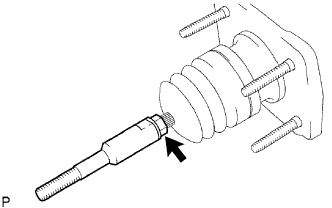 |
Loosen the lock nut on the brake master cylinder side and remove the rod operating adapter and lock nut.
| 12. REMOVE MASTER CYLINDER BOOT |
| 13. REMOVE BRAKE BOOSTER PISTON SUB-ASSEMBLY |
| 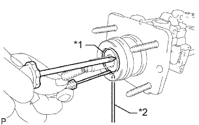 |
Pressing the piston in with a screwdriver, use a pin or equivalent to push the C-ring from the hole in the master cylinder body and then remove it with another screwdriver.
| *1 | C-Ring |
| *2 | Pin |
Remove the plug from the piston.
Remove the piston by pulling it straight out, not at an angle.